Games
I've been making games in one form or another since I was eleven. The tools have changed over the years, but the part I enjoy most hasn't: starting with something I want to try and figuring out how to make it work.
MAKING GAMES OVER THE YEARS
STARTED WITH
Scratch · age 11
EXPANDED INTO
Python / Pygame · Game Systems
Godot / GDScript
NOW EXPLORING
AI + Games
01 / Interactive Storytelling
Letting the Player Discover the Story
Crimson Echoes began as a three-person project inspired by Little Red Riding Hood. Two of my teammates created the artwork, while I was responsible for programming the game in Godot.
We didn't want to simply retell the original story. We kept familiar characters—the girl, the grandmother, the hunter, and the wolf—but rearranged their relationships and histories so that the player's first understanding of the story would gradually begin to change.
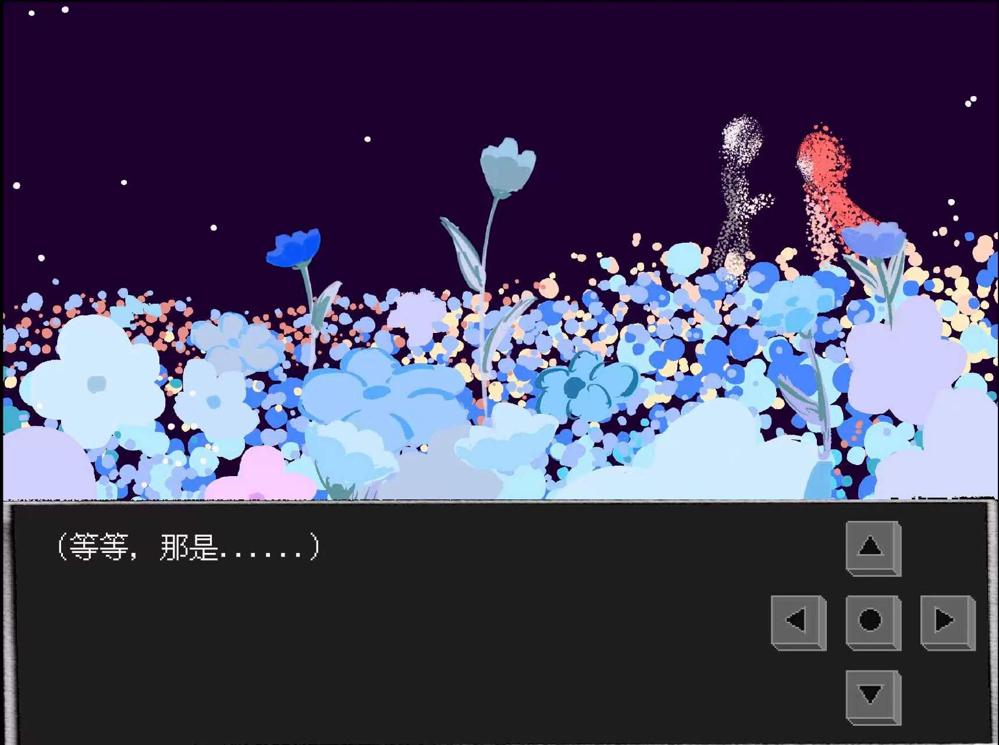
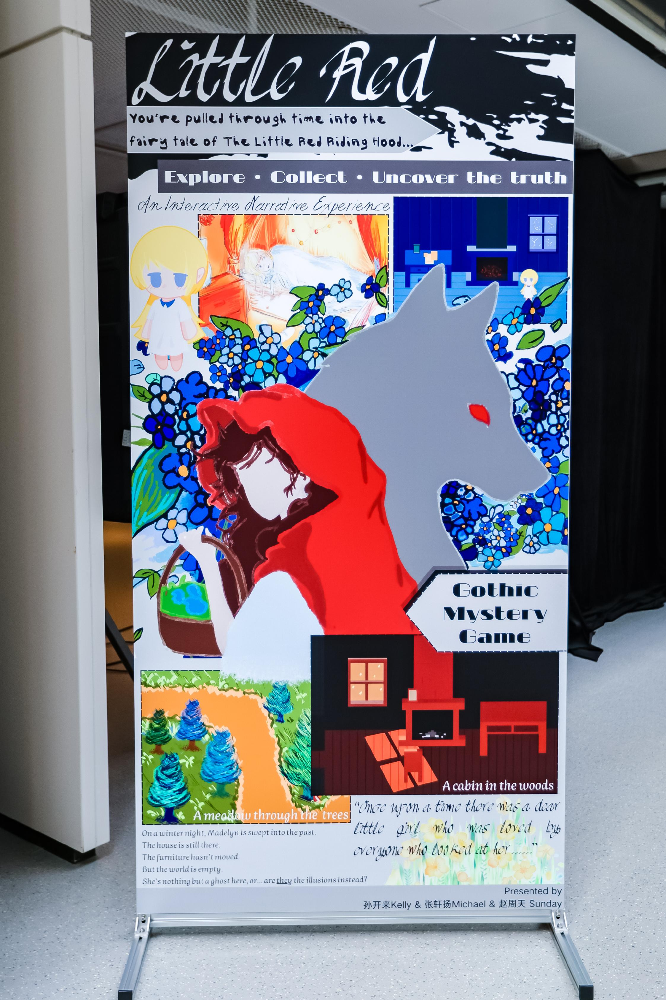
I wanted the story to be something the player discovered rather than something the game simply explained. Clues are scattered through diaries, photographs, objects, conversations, and memories. Some open new paths or change what happens in the game; others only begin to make sense after the player has found something somewhere else. Programming it meant thinking not only about what the story was, but also about when the player should be allowed to know each part of it.
We first showed the finished game at our school arts festival, where students, teachers, school leaders, and visitors stopped to play it. Later, we were invited to bring the project to two other schools during the holiday.
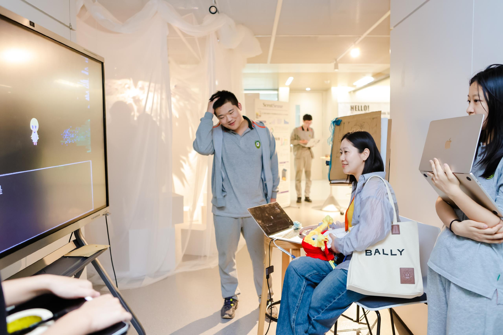
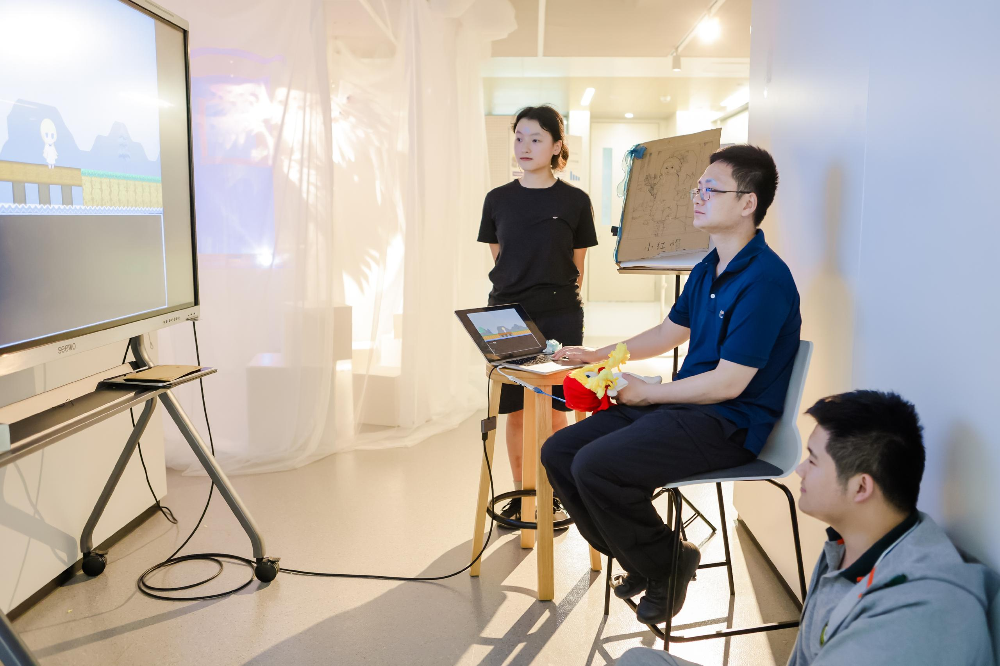
02 / Game Systems
Changing the Rules
One game I kept returning to was Plants vs. Zombies. Over time, I wanted to do more than make my own plants and enemies. I kept the basic tower-defense structure and started changing the rules underneath it.
The biggest addition was a seven-element system. Any plant can be combined with fire, water, ice, electro, wind, grass, or rock, and different elements can react with one another. I designed reactions that do different things rather than simply adding more damage: some spread attacks to nearby enemies, some knock them back, some heal plants, some build up damage over time, and some turn an elemental reaction back into sunlight. The order of the elements can matter too.
Once those rules began interacting, I started building more systems around them. Support plants can use elements to change attack speed, critical hits, healing, or sunlight production. I also added leader plants: strategic leaders shape the main build for a game, while tactical leaders add abilities that can work alongside them. I liked trying to make different combinations lead to genuinely different ways of playing, rather than just creating stronger and stronger plants.
The game eventually grew to 50 levels, nine minigames, an endless mode, a shop, an almanac, and multiple save files. I built this version in Godot. As the game became more complicated, I had to think about how to keep all of those rules working together—tracking elemental states, calculating reactions and damage in the right order, generating waves from data, and saving a player's progress.
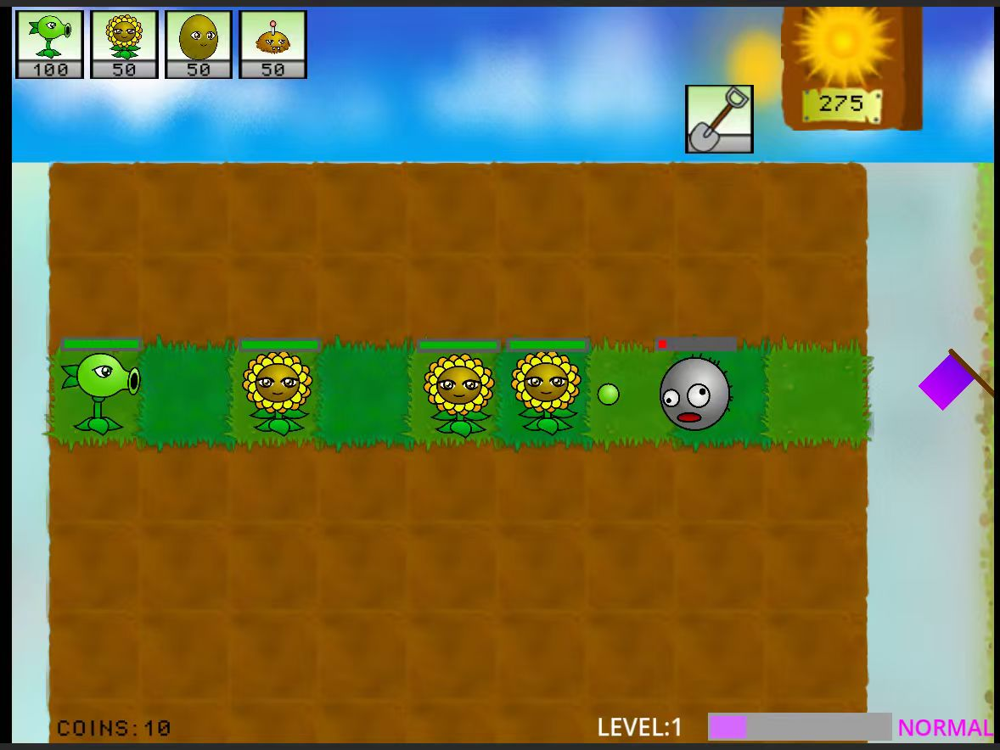
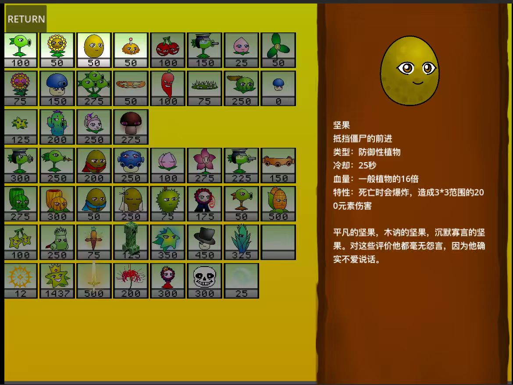
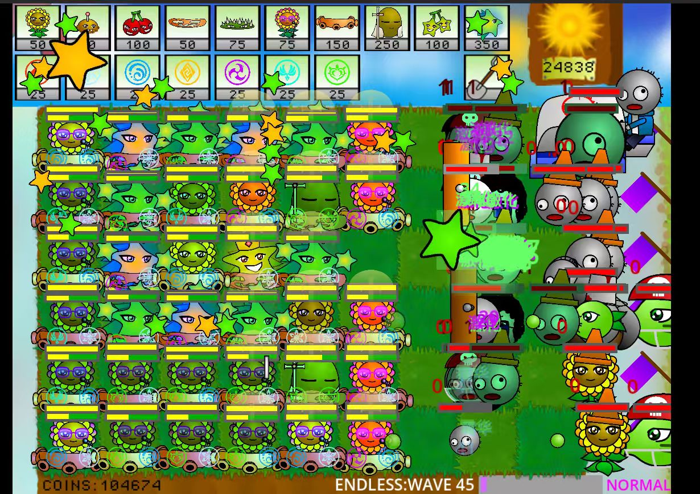
03 / System Design
Building a Combat System
I built this game in Godot as a 2D roguelike centered on bullet-hell combat and flexible character builds. I wanted it to be less about finding a stronger weapon and more about building a way to play.
I started with several basic forms of attack—projectiles, lasers, thrusts, slashes, and hammers—and made them modular. An attack could spread, track enemies, pass through walls, bounce, explode, or behave differently depending on the modules attached to it.
Then I began connecting the other parts of the game in the same way. Talents could turn defense into attack, make low health increase critical damage, or change how shields and energy were used. Skills could alter normal attacks; elemental reactions could create new effects; survival resources could become part of an offensive build. That meant a good choice depended on what I had already built: the same talent or skill could be useful in one build and almost irrelevant in another.
The difficult part was no longer adding another ability. It was making sure all of these rules could interact without breaking one another—and still leave the player with meaningful choices. That became the part I enjoyed most: designing a system, seeing what happened when its pieces met, and continuing to adjust the rules as the game grew.
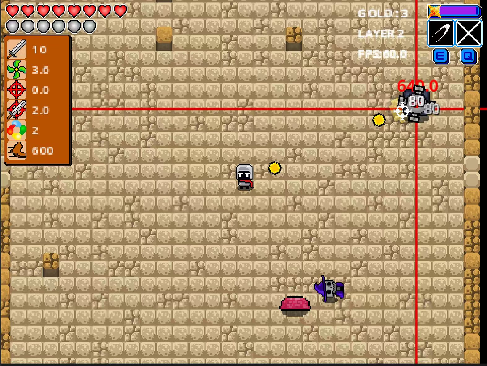
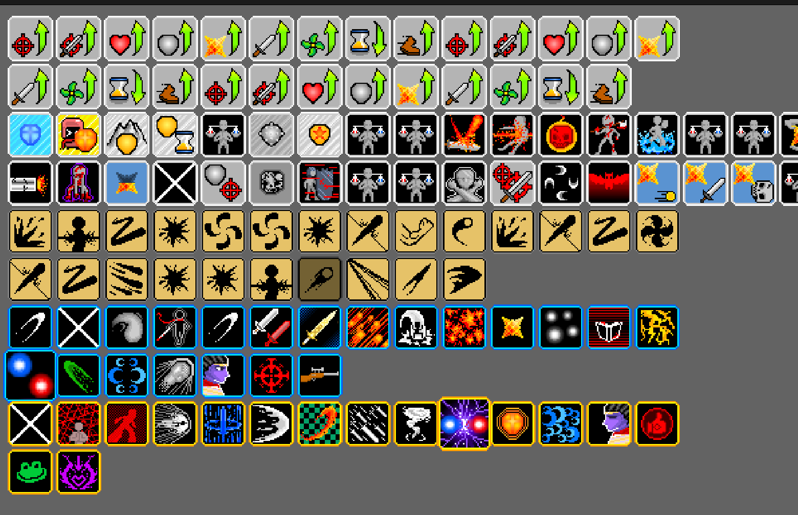
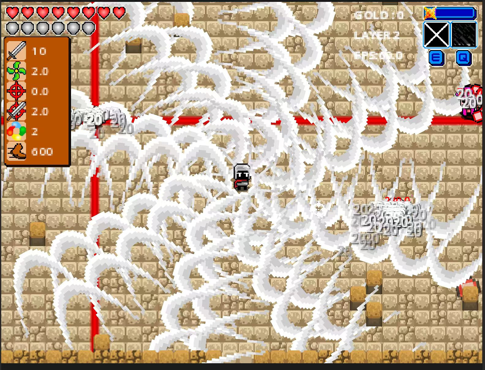
04 / Scratch
Making Games at Eleven
By 2020, when I was 11, I had a Scratch account called THE_CIRCLE_SCRATCHER, where I shared 11 projects.
A neighbor of mine was learning Scratch, and we had started playing around with it together. It seemed pretty easy to pick up, so I kept exploring it on my own and making games. I liked using circles as characters, but the games themselves kept getting more complicated.
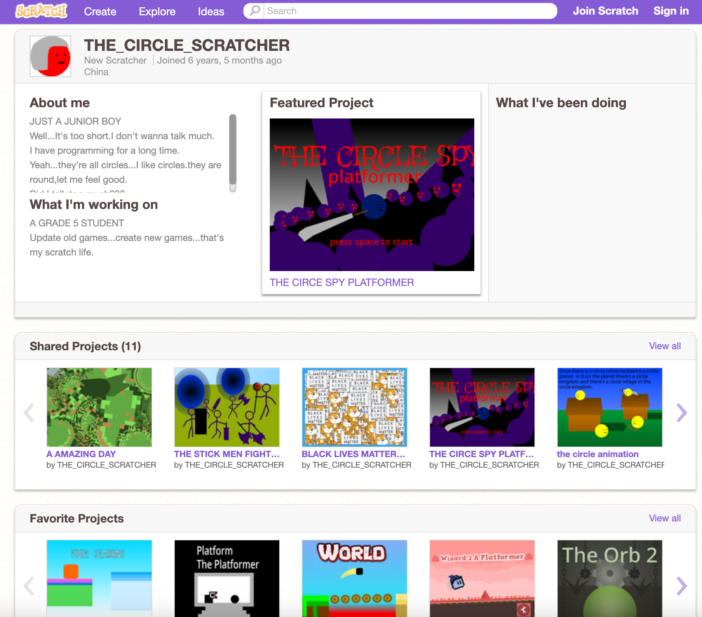
I experimented with different characters, weapons, enemies, shops, special abilities and cooldowns. One series I spent more time on was Circle War. One version was an action game; another turned the same characters into a tower-defense game inspired by Plants vs. Zombies. I still remember figuring out how to make the units snap into the right places on a grid.
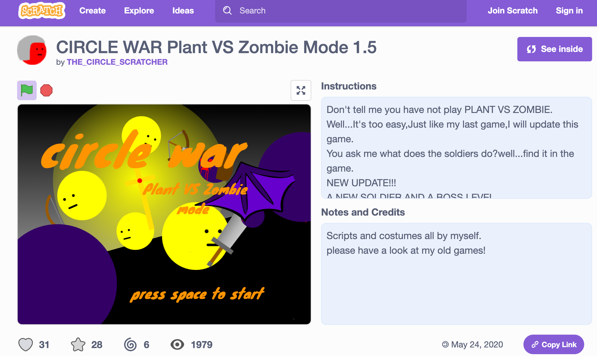
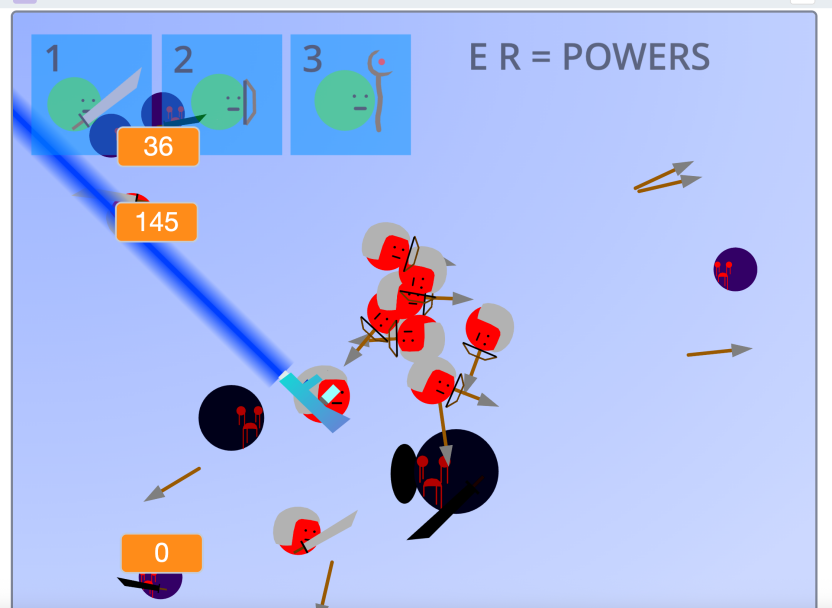
05 / Python & Pygame
From Scratch to Python
After 2020, as I started learning Python and C++, I moved away from Scratch. I kept making games, now mostly in Python with Pygame. Many of those games lived only on my computers, and some were lost as I changed computers over the years. A few survived. Some were experiments with combat, weapons, and randomly generated maps; others were early attempts at ideas I would return to years later.
Plants vs. Zombies GRL was my first attempt at making a Plants vs. Zombies-style game outside Scratch, and it included an early version of the elemental-reaction idea I later developed much further. Magic Dungeon was where I first spent more time experimenting with roguelike systems—randomly generated maps, weapons, talents, and different ways to build a character. I also made Tank Battle, along with other smaller projects during this period.
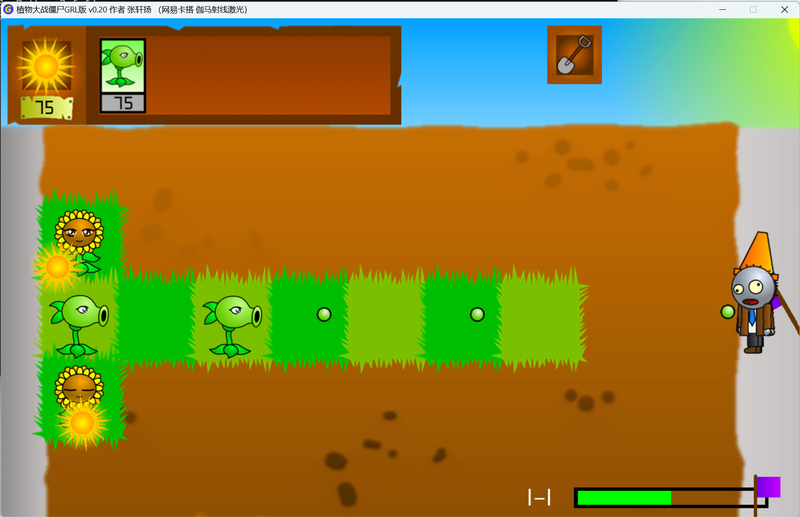
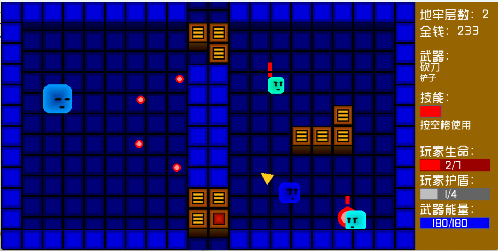
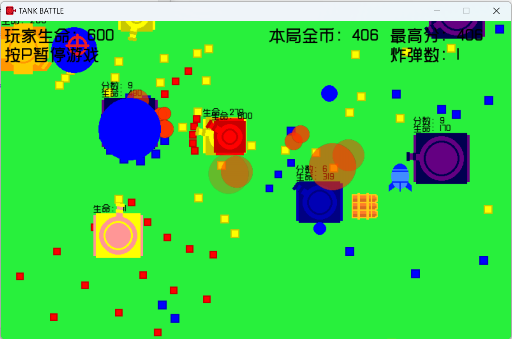